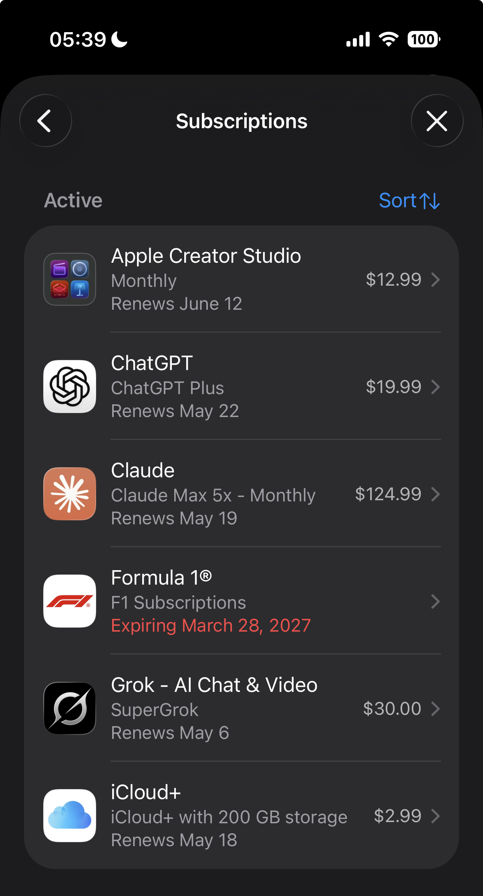
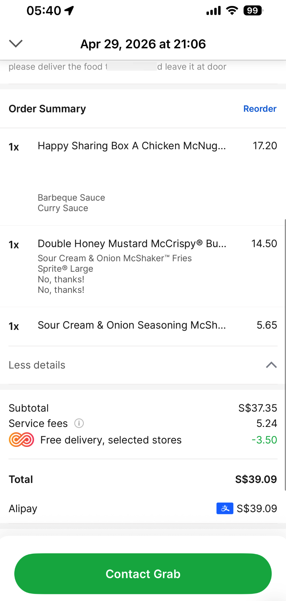
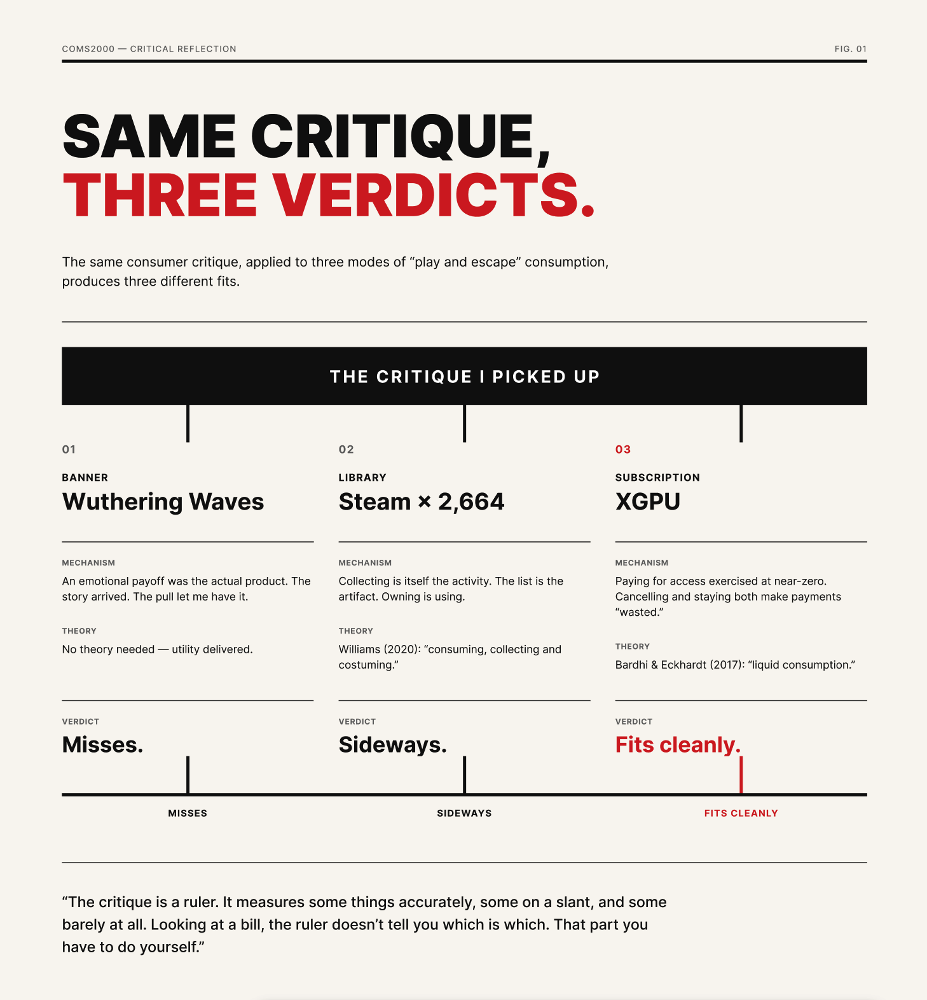

Critical Reflection
I Already Knew. I Bought It Anyway.
A communication student looks at his own bills and finds the consumer critique only fits the cheapest parts of his life.
I’m a communication student, so I had nodded along to enough YouTube essays to know what consumer culture was doing to me. The critique is not news. And yet — this year I subscribed to Apple’s Creative Studio and used only Final Cut. I bought a MacBook Air to build AI agents on; better tools live elsewhere now. I pay for things planned to be played and don’t play most.
This isn’t a before/after story. It’s the after-after. I already knew. But I kept buying. The question is why the critique only covers part.
The pages below are organized by what I thought I was becoming when I paid — what Miles (2010) calls shopping for dreams. As a Student and Professional, I paid for competence. In Everyday Shopping, for rest. In Play and Escape, for time I don’t have. (I swapped the template’s Tourism because online, the real escape is a subscription.)
What links them is the consumer’s critique covers what’s cheapest on my bill, and what’s cheapest in my conscience. The expensive lines — rent, electricity, the games top-ups I never regret — are the ones it can’t reach. It works best on the McDonald’s delivery fee from a McDonald’s three minutes away.
I Bought the Tools. The Tools Worked. So Where Did the Relief Come From?
The first time I subscribed to Apple’s Creative Studio, I had a defensible reason. I’d used Final Cut Pro before and knew it was good. Adobe was too expensive. ACS launched at $12 USD a month, about a third of Adobe. I thought — fine, I’ll try it. The bill worked.

Final Cut still works very well. I edit video with it. The other apps I have not opened, but Final Cut alone is worth that $12.
So if the bill and math is fine and the use is real, what am I doing here?
The answer is in another purchase. Last term I bought a MacBook Air, my third Mac. The Air is planned and dedicated to running AI agents. The reasoning was real: I wanted agents that could replace tools, but ended up with companion-style ones; replacement-tier was harder. Because of extremely expensive API pricing, I run it three or four hours a day. But the agents really work.
But the moment I received the Air from courier, I felt significantly more comfortable. Not lighter, is comforted. As if some background processing had been quietly downgraded.
That feeling didn’t come from agents I hadn’t built yet. It came from buying.
I notice the same about spending itself. I prefer one big purchase to a stream of small ones — bigger purchases hit harder at the moment of payment. Researchers have found that making a purchase, on its own, eases lingering sadness — the choice itself restores control (Rick, Pereira, & Burson, 2014). Marketers knew this. I hadn’t applied it to myself.
Gupta, Brooks, and Abrahams (2023) examine how students across three European countries reckon with — and often resist — being constructed as “students-as-consumers.” The literature treats this as how students relate to their degrees. I want to extend it: the construction doesn’t stop at tuition. It runs through every tool I buy to be a student. The tool can be useful (Final Cut is). The buying can still be doing affective work the tool itself doesn’t account for. Use doesn’t quite absolve the purchase, even when the use is real.
The relief came before the agents was built. The thrill came at the moment of paying. The agents came along too — they just took a while.
A Three-Minute Walk and a Delivery Fee
Yesterday, with two essays there and a third staring at me, I chose to order McDonald’s from a McDonald’s three minutes’ walk away. Down a few floors, across one road. The delivery fee was small. I paid it without thinking, ate without leaving my desk, and went back to work.
This is the kind of purchase consumer culture critique trains me to flag — convenience over effort, outsourcing a task I could do myself, letting an app pick it up. It makes the “consumption I should feel slightly bad about” list immediately.

And then I opened my year-end bill.
The McDonald’s fee is so far down the list I have to scroll. The biggest line, by an embarrassing margin, is rent. The next is the SP bill — Singapore’s electricity, gas, water — up again this year. Then groceries, and the recurring transport top-up. None of these are choices in any meaningful sense. The course readings have nothing to say about an SP bill. The critique I picked up online has no position on rent. They have positions on the delivery fee.
de Solier (2013) writes that “questions of morality are central to consumption,” and that buying or refusing to buy is a key site of self-making (p. 108). Her empirical site is Australian foodies — moral choices at the level of artisanal over mass, slow over fast. I want to extend her sideways. When I look at my bill, the moral discourse I bring to consumption attaches almost only at that level — small, visible, chosen — and almost never to the structural conditions of what I pay. The thing I cannot opt out of pays for itself in silence. The thing I can opt out of, I get to feel bad about.
So what’s cheapest in my conscience wasn’t a clever line. The words I picked up this term land mostly on the cheap stuff. The expensive stuff goes uncovered.
Over Two Thousand Games, One Subscription, One Banner
I have 2,664 games on Steam. I have played, by my own count, maybe five hundred. I subscribe to Xbox Game Pass Ultimate and have not opened it since they raised the price. And at the end of last quarter I spent more than I want to write down on a single banner in Wuthering Waves — and I do not feel even slightly bad about it.
The critique I have been working with cuts through some of these cleanly, sideways through some, and almost not at all through the third. They are all “play and escape” purchases. They refuse to behave the same way under the same lens.
Banner (no regret). The Wuthering Waves story I paid into was real. I cried, I pulled, and I paid, and I would do it again. The point, for me, was an emotional payoff. It arrived. Happiness, when I am honest about it, is mine to define. Not pulling would have meant leaving a character I’d spent five hours grieving for behind a paywall I could afford. The “consumer manipulation” framing assumes I was tricked. I wasn’t. The story made me want her. The pull let me have her. The math is not flattering, but the utility is real.

Library (collecting is the use). Steam is different. I don’t pull for games on Steam — I accumulate them — sales, bundles, the occasional impulse — and the pile grows faster than I can open it. The 2,000-plus unopened games are not a moral failure. Williams (2020) studies theme park fans whose “consuming, collecting and costuming” of merchandise is itself the fan activity — not a means to some downstream use. A Steam library has the same shape. The list is the artifact. Selecting which game I’d play if I had the time is itself the activity. The owning, for that genre of consumption, is the using.
Subscription (the critique fits cleanly). And then there is XGPU. I subscribed when it was cheaper. I have not opened it for months. Microsoft raised the price again, I noticed the email, I did not unsubscribe. Bardhi and Eckhardt (2017) describe a shift toward “liquid consumption” — ephemeral, access-based, and dematerialised — distinct from the “solid” mode built around ownership. XGPU is liquid in their sense; what I am paying for is the access itself, exercised at near-zero. Cancelling converts prior payments into “wasted.” Staying makes current payments “wasted later.” I am running the loss either way — by design.

So three modes, three verdicts: cleanly through XGPU, sideways through Steam, nearly missing the banner. (Williams catches more of Steam than the consumer studies critique does.) This is the actual problem the unit left me with. The critique is a ruler. It measures some things accurately, some on a slant, and some barely at all. Looking at a bill, the ruler doesn’t tell you which is which. That part you have to do yourself.
As I Was Writing This
I would like to end on something tidier. I can’t. I finished writing with the companion of the agent on the MacBook Air, and FCPX still installed in my major Mac, with more than two thousand unopened games on the Steam account I kept signed in. XGPU is still active because of upcoming Forza Horizon 6 on 15 May. I knew the critique before this and I’ll know it after. It will still cover only the parts of my life it can reach. The honest move is to say so, and stop hoping the writing fixes what it criticizes.
References
Bardhi, F., & Eckhardt, G. M. (2017). Liquid consumption. Journal of Consumer Research, 44(3), 582–597. https://doi.org/10.1093/jcr/ucx050
de Solier, I. (2013). Consuming things: Material cultures and moralities of consumption. In Food and the self: Consumption, production and material culture (pp. 108–146). Bloomsbury.
Gupta, A., Brooks, R., & Abrahams, J. (2023). Higher education students as consumers: A cross-country comparative analysis of students’ views. Compare: A Journal of Comparative and International Education, 55(2), 174–191. https://doi.org/10.1080/03057925.2023.2234283
Miles, S. (2010). Shopping for dreams. In Spaces for consumption (pp. 98–118). SAGE.
Rick, S. I., Pereira, B., & Burson, K. A. (2014). The benefits of retail therapy: Making purchase decisions reduces residual sadness. Journal of Consumer Psychology, 24(3), 373–380. https://doi.org/10.1016/j.jcps.2013.12.004
Williams, R. (2020). Embodied transmedia and paratextual-spatio play: Consuming, collecting and costuming theme park merchandise. In Theme park fandom: Spatial transmedia, materiality and participatory cultures (pp. 181–210). Amsterdam University Press. https://doi.org/10.5117/9789462982574_ch07